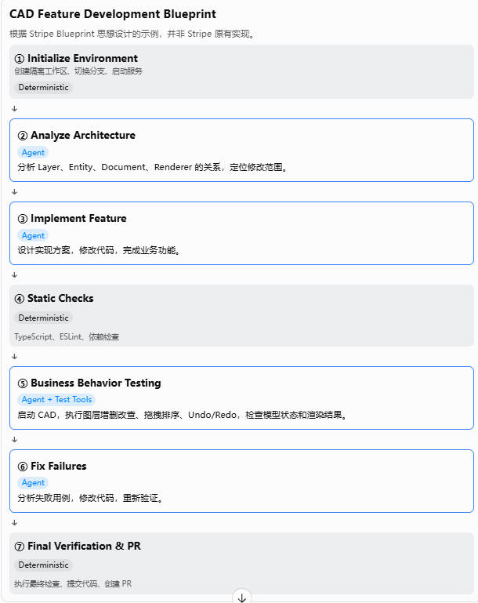

Harness Engineering，Minions - Part 2 #
这是 Minions: Stripe’s one-shot, end-to-end coding agents—Part 2 的解读。
一、开篇：Minions 的最新成果 #
在 Part 1 中，Stripe 介绍了 Minions 的整体使用体验。
这里作者先更新了一组数据：
截至 Part 2 发布时，每周有超过 1300 个 Pull Request 被合并，这些 PR 完全由 Minions 生成代码，人类负责 Review，但没有人工编写的代码。
这篇文章将重点介绍 Minions 的 Stripe 专属实现，主要包括：
- Devbox：云端开发环境。
- Agent：Agent 执行引擎。
- Blueprints：Agent 工作流编排机制。
- Rule Files：代码库规则和上下文管理。
- MCP：动态上下文获取和工具调用。
- Iterate：自动测试和反馈迭代。
二、Devboxes：随时准备好的云端开发环境 #
2.1 为什么需要 Devbox？ #
要想让无人值守的 Agent 在大规模工程项目中有效工作，首先需要一个可靠的云端开发环境。
Stripe 认为，这个环境至少需要满足三个条件：
Parallelizable（可并行）
人类可以同时启动多个 Agent，每个 Agent 处理一个独立任务。
不同 Agent 应该拥有相互独立的工作目录和代码修改空间。
否则就可能出现：
- Agent A 修改了某个文件。
- Agent B 同时修改同一个文件。
- Agent A 读取到 Agent B 修改后的代码。
- 两个 Agent 相互干扰，产生冲突。
这种冲突不仅影响代码，还会消耗大量 Token，让 Agent 花时间解决本来不应该出现的问题。
Predictable（可预测）
每次启动 Agent，都应该获得一致的开发环境。
不能这次缺少依赖，下次又缺少某个服务。
如果环境本身不稳定，Agent 就可能把大量精力花在处理环境问题上，而不是完成开发任务。
Isolated（隔离）
Agent 必须与具有敏感权限的机器隔离。
尤其要避免 Agent 接触开发者个人的凭据、生产环境权限等。
因为无人值守意味着 Agent 不会一直有人在旁边监督。
2.2 为什么本地开发环境不够？ #
使用 Docker 容器或者 Git Worktree 可以解决部分问题。
但要同时实现：
- 完整的开发环境。
- 独立的工作目录。
- 与开发者相同的 Shell 能力。
- 合理的权限限制。
- 多任务并行。
在本地环境中并不容易。
特别是 Agent 需要拥有足够的权限执行开发操作，但又不能拥有破坏敏感资源的权限。
这是一个比较棘手的问题。
2.3 Stripe 的解决方案：Devbox #
Stripe 的 Minions 直接使用公司原本为人类工程师准备的标准开发环境：Devbox。
Devbox 本质上是一个运行在 AWS EC2 上的开发实例。
它包含：
- Stripe 的源代码。
- 正在开发的各种服务。
- 完整的开发工具链。
实际上，Stripe 的人类工程师也经常通过 SSH 连接到 Devbox，再使用 IDE 进行开发。
这里有一个 DevOps 领域的概念：
Cattle, not pets（牛群，而不是宠物）。
它的意思是：
服务器应该是标准化、可替换的基础设施，而不是需要精心维护的一台特殊机器。
例如：
- 不需要长期维护某一台特殊开发机器。
- 机器出现问题可以直接销毁并重新创建。
- 所有开发机器尽量使用统一配置。
Stripe 的很多工程师习惯每个任务使用一个 Devbox，同时运行多个开发环境并不罕见。
2.4 如何让 Devbox 在 10 秒内启动？ #
Stripe 希望 Devbox 从启动到可以开发的时间控制在 10 秒以内。
为此，他们采用了预先创建和预热的 Devbox 池（Pool）。
在真正分配给工程师之前，后台已经提前完成：
- 克隆大型 Git 仓库。
- 预热 Bazel 缓存。
- 预热类型检查缓存。
- 启动代码生成服务。
- 准备其他开发依赖。
因此，当工程师申请 Devbox 时，实际上是从一个已经准备好的环境池中分配实例。
10 秒之后，开发者就能获得一个基于近期 Master 代码的开发环境。
可以立即：
- 打开 REPL。
- 运行测试。
- 修改代码。
- 执行类型检查。
- 启动 Web 服务。
2.5 这一节最重要的观点 #
Stripe 的 Devbox 并不是为了 AI 专门设计的。
它早在人类工程师使用 Coding Agent 之前就已经存在。
但是，Stripe 发现：
人类工程师需要的并行性、可预测性和隔离性，同样是 AI Agent 高效工作的基础。
为人类开发者建设良好的工程基础设施，最终也会成为 AI Agent 的基础设施。
这是一个很值得思考的观点：不要只想着为 AI 重新造一套开发环境，而应该先把原本的工程环境建设好。
三、Agent：Minions 的执行引擎 #
3.1 为什么要自己开发 Agent Harness？ #
Stripe 的 Devbox 主要复用了原有的人类开发基础设施。
但是，Agent Harness 是 Stripe 专门为 Minions 定制的。
2024 年底，当 Coding Agent 开始在行业内兴起时，Stripe Fork 了 Block 开源的 Goose。
Goose 是较早被广泛使用的 Coding Agent 之一。
Stripe 在此基础上进行了大量定制，使其能够接入 Stripe 自己的 LLM 基础设施。
随着时间推移，Stripe 的开发重点逐渐转向 Minions 这种无人值守的使用场景。
而对于需要人类实时监督的 Coding Agent，Stripe 已经提供了 Cursor、Claude Code 等第三方工具。
3.2 Minions 与普通 Coding Agent 的本质区别 #
这是这一节最重要的内容。
普通 Coding Agent 通常是作为开发者的助手存在的。
它们的设计假设是：
始终有一个人类开发者在旁边监督 Agent。
例如：
- 人类可以随时打断 Agent。
- 人类可以输入新的指令。
- 人类可以随时改变 Agent 的执行方向。
- Agent 可以等待人类确认某些操作。
但是 Minions 不一样。
Minions 是完全无人值守的。
因此，它的 Harness 不能依赖这些面向人类交互的功能：
- 不依赖人类随时打断。
- 不依赖人类手动发出下一步命令。
- 不依赖人类在执行过程中不断指导。
3.3 为什么 Minions 可以跳过权限确认？ #
普通 Coding Agent 在执行危险操作时，往往会弹出确认框。
例如：
- 是否允许执行 Shell 命令？
- 是否允许修改文件？
- 是否允许访问某个资源？
但是，如果 Minions 也这样做，就会出现一个问题：
没有人类监督时，谁来点击确认？
Stripe 的解决方案是：
通过 Devbox 的隔离机制来降低操作风险，而不是依赖人工确认。
每个 Agent 都在一个隔离的 Devbox 中工作。
即使 Agent 做错了操作，影响范围也被限制在当前 Devbox 内。
因此，在这个受控环境中，Minions 可以获得较完整的执行权限，并跳过大量人工确认提示。
这里不是说 Stripe 完全不需要权限控制，而是把安全边界从交互式确认转移到基础设施隔离和系统级安全控制。
3.4 Stripe 专门优化了什么？ #
由于 Minions 是针对 Stripe 的内部开发流程设计的，因此他们可以对 Agent 做很多针对性优化。
例如：
- 适配 Stripe 内部开发工具。
- 适配内部代码仓库。
- 适配内部 CI。
- 适配内部测试机制。
- 优化 Agent 的上下文管理。
其中一个非常重要的设计，就是下一节要介绍的 Blueprints。
四、Blueprints：Minions 最核心的编排机制 #
我认为这是整篇 Part 2 最值得研究的部分。
Stripe 在这里提出了一个概念：Blueprint（蓝图）。
它不是普通的 Prompt，也不是简单的 Agent Workflow，而是一种结合了确定性代码和 Agent 自主决策能力的任务编排机制。
4.1 先理解两种常见的 Agent 编排方式 #
在介绍 Blueprint 之前，作者先对比了两种常见模式。
第一种：Workflow（工作流）
Workflow 是通过预先定义好的流程图来组织 LLM 的执行。
例如：
1. 分析需求 【LLM 节点 1】
2. 生成代码 【LLM 节点 2】
3. 执行测试 【LLM 节点 3】
4. 生成结果
每个节点负责一个相对明确的步骤，执行路径由预先定义的流程控制。
它的特点：
- 执行流程明确。
- 每个节点的职责比较单一。
- 节点之间的执行顺序预先确定。
- 可以预测整个任务的执行过程。
缺点是灵活性不足。
如果某个步骤出现了预料之外的问题，固定流程可能无法很好地处理。
第二种：Agent（自主智能体）
Agent 通常采用一个简单的循环结构：
LLM 根据当前上下文决定下一步操作，调用工具，观察结果，然后再次决定下一步。
Agent：自主决策循环
1. LLM 思考: 根据当前任务决定下一步
2. 调用工具: 搜索代码、修改文件、运行测试
3. 观察结果: 将工具执行结果返回给 LLM
// 重复上述过程，直到 Agent 认为任务完成。
它的优点是灵活。
Agent 可以根据执行结果自主决定：
- 是否需要继续搜索代码。
- 是否需要修改其他文件。
- 是否需要运行额外测试。
- 是否需要改变实现方案。
但是它也有缺点：
Agent 可能做出不必要的决策，甚至遗漏一些必须执行的工程步骤。
例如，你希望 Agent 最终一定运行 Lint。
如果只是告诉 Agent：
「修改完成后记得运行 Lint。」
它可能忘记，也可能认为没有必要。
4.2 Blueprint：结合 Workflow 和 Agent #
Stripe 提出的 Blueprint，就是希望结合两者的优点。
原文的核心意思是：
Blueprint 是用代码定义的 Workflow，用来指导一次 Minion 执行过程。
它既包含确定性的流程节点，也包含可以自主决策的 Agent 节点。
换句话说：
- 有些事情应该由程序明确规定。
- 有些事情应该交给 Agent 自己判断。
Blueprint：混合编排模式
以下为概念示意，不是 Stripe 原图。
1. [确定性节点] 初始化开发环境(代码执行，不调用 LLM)
2. [Agent Node] Implement task: Agent 自主分析需求、搜索代码、设计方案并修改代码。
3. [确定性节点] Run configured linters: 程序强制执行 Lint
4. [Agent Node] Fix CI failures: Agent 根据测试失败信息分析原因并修复代码。
5. [确定性节点] Push changes: 程序执行 Git 操作
6. 提交 Pull Request
注意，这里有一个非常重要的区别：
Implement task 是 Agent 节点。
Agent 可以自由决定如何完成任务。
而 Run configured linters 是确定性节点。
它不需要 LLM 思考，直接由程序执行。
4.3 为什么要这样设计？ #
Stripe 发现，对于那些可以提前预测的小决策，直接用代码实现，比让 LLM 每次都重新思考更好。
例如：
「任务结束后一定要运行 Lint。」
这件事根本不需要 LLM 决策。
如果交给 LLM：
- 会消耗 Token。
- 可能忘记执行。
- 可能错误判断是否需要执行。
如果直接写在 Blueprint 中：
- 每次都会执行。
- 不需要额外推理。
- 不会因为 Agent 判断失误而遗漏。
文章特别强调了一个观点： 将 LLM 放入受控的执行边界中，可以逐步累积整个系统的可靠性收益。
原文用了一个很形象的表达： Putting LLMs into contained boxes.
可以理解为：不要让 LLM 接管整个工程流程，而是把它放在职责明确、权限受控的节点中。
4.4 Blueprint 还有一个重要能力：上下文控制 #
Blueprint 不仅能控制执行流程，还能控制每个 Agent 节点的上下文。
例如：
Implement task 节点需要：
- 需求描述。
- 代码仓库信息。
- 架构文档。
- 搜索和修改代码的工具。
而 Fix CI failures 节点需要：
- CI 错误信息。
- 相关测试代码。
- 当前代码修改。
- 修复问题所需的工具。
两个节点不一定需要相同的上下文和工具。
Blueprint 可以针对不同子任务：
- 限制可用工具。
- 修改 System Prompt。
- 精简对话上下文。
- 提供特定任务所需要的信息。
这其实也是 Context Engineering 的一种实践。
4.5 Blueprint 不只服务于 Minions #
Stripe 还允许不同团队创建适合自身业务的 Blueprint。
例如，有些团队需要执行复杂的 LLM 辅助代码迁移。
这种迁移无法简单地通过固定的 Codemod 完成，因为代码中的情况存在一定的不确定性。
因此可以创建一个专门的 Blueprint：
- 确定性节点负责扫描、备份、检查和提交。
- Agent 节点负责理解特殊代码、决定如何修改。
- 确定性节点负责验证迁移结果。
这样就可以把通用的 Agent 编排能力扩展到不同的工程场景。
五、Context Gathering：规则文件 #
这一节讲的是如何让 Agent 理解大型代码仓库。
5.1 为什么需要 Rule Files？ #
对于 Stripe 这样的大型代码库，即使 LLM 很强大，也不能保证它天然知道项目的所有开发规范。
例如：
- 应该使用哪个内部库？
- 某个模块有哪些特殊限制？
- 项目推荐使用什么设计模式？
- 某个目录有哪些特殊的开发要求？
即使有 Linter，也无法覆盖所有架构和业务规范。
因此，Stripe 使用 Agent Rule Files，让 Agent 在浏览代码目录时，自动获取相应的项目知识。
类似的文件包括：
CLAUDE.mdAGENTS.md- Cursor Rules
5.2 为什么 Stripe 不推荐大量全局规则？ #
这是一个很值得注意的设计。
Stripe 的仓库非常庞大。
如果把所有规则都放在全局配置中，那么 Agent 在真正开始工作之前，上下文窗口可能就已经被大量规则占满了。
例如：
假设我正在做的 CAD 项目有：
src/
├── command/
│ └── AGENTS.md
├── transaction/
│ └── AGENTS.md
├── document/
│ └── AGENTS.md
├── rendering/
│ └── AGENTS.md
└── geometry/
└── AGENTS.md
如果 Agent 修改 Rendering 模块：
它应该优先读取 Rendering 对应的规则，而不是把 Command、Transaction、Geometry 等所有规则都加载进来。
Stripe 几乎只使用作用于特定子目录或文件模式的规则。
规则会随着 Agent 遍历文件系统而自动附加。
这样做有三个好处：
- 减少无关上下文。
- 避免全局规则过于庞大。
- 让不同模块拥有自己的开发规范。
5.3 为什么要统一规则格式？ #
Stripe 不希望为 Minions、Cursor、Claude Code 分别维护三套不同的规则。
因为这样会导致：
- 规则重复。
- 不同工具之间规范不一致。
- 修改一份规则需要同步多份配置。
因此，Stripe 选择了 Cursor 的规则格式作为统一基础，并修改 Harness，使 Minions 也能够读取这些规则。
同时，他们还将 Cursor Rules 同步为 Claude Code 能够读取的格式。
这样，三种 Coding Agent 就能够共享同一套代码库知识。
核心思想：规则应该属于代码仓库，而不是某一个 AI 工具。
六、Context Gathering：MCP #
原文：Context gathering: MCP
这一节与上一节有明显区别。
上一节解决的是静态上下文问题。
这一节解决的是动态上下文问题。
6.1 为什么仅靠读取文件不够？ #
Agent 读取文件系统，可以了解：
- 项目目录。
- 源代码。
- README。
- 开发规范。
但实际开发任务通常还需要动态获取外部信息。
例如：
- 某个 Ticket 的详细需求。
- 内部架构文档。
- 当前 CI 构建状态。
- 代码搜索结果。
- 其他业务系统的信息。
这些内容不能仅靠读取本地文件获取。
因此，Stripe 接入了 MCP（Model Context Protocol）。
MCP 让 Agent 能够通过标准化的工具调用方式获取外部信息。
6.2 Toolshed：Stripe 的中央 MCP Server #
Stripe 内部有很多不同类型的 Agent：
- 无代码 Agent 构建平台。
- 运行在专用服务中的自定义 Agent。
- 第三方 Agent。
- 命令行 Agent。
- Slack Agent。
- Coding Agent。
这些 Agent 都需要访问内部工具。
如果每个 Agent 都单独开发一套工具，就会造成大量重复工作。
因此，Stripe 构建了一个统一的内部 MCP Server：
Toolshed
Toolshed 是 Stripe 的公共工具能力层。
它的设计目标是：
- 工程师可以统一开发 MCP 工具。
- Agent 可以自动发现这些工具。
- 不同 Agent 可以共享这些工具。
- 新增工具后，整个 Agent 体系都可以复用。
文章发布时，Toolshed 已经包含接近 500 个 MCP 工具，覆盖 Stripe 的内部系统和使用的 SaaS 平台。
6.3 为什么不把 500 个工具全部交给 Agent？ #
这里有一个很有意思的设计。
虽然 Toolshed 有接近 500 个工具，但 Stripe 并不会默认把全部工具提供给每个 Agent。
原因是：
Agent 的工具越多，不一定越好。
工具太多可能造成：
- Agent 不知道应该使用哪个工具。
- 工具之间功能重叠。
- 增加上下文开销。
- 增加错误调用的可能性。
因此，Stripe 会为不同 Agent 精心选择一组与任务相关的工具。
例如：
| Agent 类型 | 可能需要的工具 |
|---|---|
| Coding Agent | 代码搜索、文档、CI |
| Issue Agent | Ticket、项目管理 |
| Release Agent | 发布状态、部署信息 |
| Documentation Agent | 文档搜索、知识库 |
Minions 默认也只获得一小部分工具。
不过，工程师可以根据个人需求，为自己的 Minions 增加一些按主题分组的工具集合。
6.4 MCP 安全问题 #
既然 Minions 可以自主调用 MCP 工具，就必须防止它执行破坏性操作。
Stripe 使用了内部安全控制框架，确保 Agent 不能通过 MCP 工具执行危险操作。
此外还有第一层安全保护：
Devbox 本身运行在 QA 环境。
因此 Minions：
- 无法访问真实用户数据。
- 无法访问 Stripe 生产服务。
- 无法任意访问外部网络。
这里的设计思路非常清晰：
不要只依赖 Agent 自己遵守安全规则，而要在基础设施和工具权限层面限制它能做什么。
七、并持续迭代 #
这一节讲的是 AI 自动开发过程中非常关键的一个问题：
如何让 Agent 自己发现代码中的问题，并不断修复，直到达到交付标准？
7.1 为什么需要自动反馈？ #
Stripe 的目标是让 Minions 一次性完成任务。
但一次性完成不代表代码第一次生成就一定正确。
Agent 仍然需要自动化反馈，才能知道自己的修改是否有效。
Stripe 已经拥有超过 300 万个测试。
这些测试可以为 Minions 提供大量反馈。
但是，Stripe 不希望所有问题都依赖 CI 才能发现。
因为 CI 的执行成本比较高。
7.2 Shift Feedback Left：尽可能提前发现问题 #
Stripe 使用了一个软件工程领域的原则：
Shift Feedback Left（将反馈尽可能左移）。
意思是：
如果某个问题可以在本地开发环境中发现，就不要等到代码提交后才通过 CI 发现。
例如：
假设某个代码修改存在 Lint 错误。
传统方式：
- Agent 修改代码。
- Push 到远程仓库。
- CI 开始执行。
- CI 发现 Lint 错误。
- 将错误返回给 Agent。
- Agent 修复。
- 再次 Push。
这显然浪费了时间和 CI 资源。
Stripe 的做法是：
在本地 Push 之前，就通过开发环境中的自动检查发现并修复这些问题。
7.3 Stripe 如何优化 Lint？ #
Stripe 使用了 Pre-push Hooks。
在开发者 Push 代码时，自动修复最常见的 Lint 问题。
另外，他们还运行一个后台 Daemon：
- 根据代码修改，提前计算可能涉及的 Lint 规则。
- 预先执行相关 Lint。
- 缓存执行结果。
- 在 Push 时快速应用修复。
因此，工程师通常可以在不到一秒的时间内获得 Lint 修复结果。
Minions 也直接集成了这套机制。
这样 Agent 就不需要浪费 Token 和 CI 时间，反复处理本地就能解决的格式问题。
7.4 Minions 的完整反馈循环 #
Stripe 将 Lint 检查作为 Blueprint 中的确定性节点。
Agent 完成代码修改后：
- 自动执行相关 Lint。
- 如果失败，就在本地继续修复。
- 直到 Lint 通过，才允许 Push。
然后才进入 CI 阶段。
Minions 的测试反馈流程:
1. Agent 修改代码
2. 本地 Lint 检查: 确定性节点，失败则本地修复
3. Push 代码，执行 CI
4. 自动应用 CI Autofix: 能够自动修复的问题直接处理
5. [Agent Node] Fix CI failures: 无法自动修复的问题交给 Agent
6. 再次 Push，执行第二轮 CI
7. 交付人工 Review
这里需要注意，Stripe 的标准 Blueprint 允许一次修复机会：
- 第一次 CI 失败，Agent 获取错误信息并尝试本地修复。
- 第二次 Push 和 CI 仍然失败，就把分支交给人工检查。
7.5 为什么不允许无限次重试？ #
作者专门解释了这个问题。
CI 执行需要消耗：
- Token。
- 计算资源。
- 时间。
如果让 Agent 无限次地执行：
修改代码 → Push → CI → 修复 → 再次 CI。
理论上它可能一直尝试，但这并不意味着最终一定能解决问题。
而且随着重试次数增加，继续运行完整 CI 的边际收益会逐渐下降。
因此 Stripe 选择了有限次数的反馈循环。
这实际上是在三个因素之间做平衡：
- 速度。
- 成本。
- 代码正确性。
一个成熟的 Agent 系统，不应该追求无限自动修复，而应该明确什么情况下继续尝试，什么情况下交给人类。
八、总结：Minions 的未来 #
Stripe 认为 Minions 只是他们使用 AI 提升工程效率的一种方式。
它结合了行业通用技术：
- Agent Harness。
- MCP。
- Coding Agent。
同时也结合了 Stripe 自己多年积累的内部基础设施：
- Devbox。
- 内部开发工具。
- 代码仓库。
- CI。
- 测试体系。
- 开发规范。
作者强调：
过去为提升人类工程师生产力所做的投资，在 Agent 时代同样会产生巨大的价值。
例如：
- 更好的文档。
- 更稳定的开发环境。
- 更快的反馈循环。
- 更规范的工程流程。
这些原本就是优秀软件工程团队应该建设的基础设施。
而现在，它们也成为 AI Agent 能够高效工作的基础。
九、结合 CAD 项目，深入分析 Blueprint #
结合 Blueprint 的设计，其实能够给 CAD 软件开发或者其他复杂软件开发一个很好的参考。
9.1 先看一个实际的 CAD 开发任务 #
假设你给 Codex 一个任务：
「实现 CAD 图层管理功能，包括图层的增删改查、图层拖拽排序，以及图层内部实体的置顶和置底。」
这个任务实际上包含两种性质完全不同的工作。
第一类：需要 AI 自主决策的工作
- 分析现有 Layer 数据结构。
- 找到实体与图层的关联关系。
- 理解当前渲染顺序。
- 设计图层排序的实现方案。
- 修改相关代码。
- 根据错误信息调整实现。
这些工作存在不确定性，适合交给 Agent。
第二类：不需要 AI 决策的工作
- 启动开发环境。
- 执行 TypeScript 类型检查。
- 执行 ESLint。
- 执行单元测试。
- 执行 Git 操作。
- 检查测试结果。
- 生成 PR。
这些工作本来就有确定的执行规则，应该交给程序。
9.2 我建议的 CAD Blueprint #
CAD Feature Development Blueprint #
根据 Stripe Blueprint 思想设计的示例，并非 Stripe 原有实现。

这里我特别强调第⑤步。
CAD 的业务正确性不能只通过代码测试来判断。
例如，图层拖拽排序：
- 模型中的图层顺序是否正确？
- Entity 的 Layer 关联是否正确？
- Renderer 是否按照预期顺序绘制？
- Undo/Redo 是否正确？
- 保存、重新打开后是否一致？
这些才是真正的业务验收。
最好把这些操作转化成自动化测试，而不是仅仅让 Agent 根据代码逻辑判断自己是否完成。
9.3 Blueprint、Skill、MCP、AGENTS.md 应该如何分工？ #
这是我认为在建设 AI Coding 工程体系时，最需要明确的边界。
| 技术 | 职责 | CAD 项目示例 |
|---|---|---|
| AGENTS.md | 提供项目规则 | Transaction 使用规范 |
| Skill | 封装专业知识和任务方法 | CAD 图层功能开发指南 |
| MCP | 提供外部工具和数据 | 代码搜索、CI 查询 |
| Blueprint | 编排整个任务流程 | 分析 → 开发 → 测试 → 修复 |
| Harness | 提供完整工程运行和约束体系 | 环境、工具、规则、反馈、安全 |
它们不是相互替代的关系。
例如：
当 Blueprint 执行到 Implement Feature 节点时：
- Agent 读取对应模块的 AGENTS.md。
- 根据任务需要加载 CAD 开发 Skill。
- 通过 MCP 获取相关架构文档。
- 分析代码并完成修改。
当执行到 Static Checks 节点时：
- Harness 直接调用 Lint。
- 执行类型检查。
- 根据退出码判断是否通过。
不需要再让 LLM 自己决定是否执行。
十、Part 1 和 Part 2 的核心区别 #
最后，把两篇文章放在一起看：
| 对比 | Part 1 | Part 2 |
|---|---|---|
| 重点 | Minions 的整体使用体验 | Minions 的内部实现 |
| 核心内容 | Slack、PR、自动开发 | Devbox、Blueprint、MCP |
| Agent | 如何使用 | 如何编排和约束 |
| 上下文 | 如何获取 | Rule Files、MCP |
| 测试 | 自动反馈 | Feedback Left、有限重试 |
| 工程基础 | 端到端开发 | 隔离、预热、确定性执行 |
我认为两篇文章最值得记住的三个观点是：
- 基础设施优先于 Prompt。 不要只研究如何给 AI 写更好的指令，还要提供稳定、隔离、可复用的工程环境。
- 确定性流程与 Agent 自主决策结合。 能用程序保证的事情，不要交给 LLM 临时判断。
- 自动化测试必须覆盖业务行为。 代码编译成功，不代表软件功能正确。
对于这种复杂 CAD 软件，我尤其推荐研究 Blueprint。
因为 CAD 的开发不是简单的 CRUD，很多任务涉及模型状态、事务、几何算法、渲染和交互之间的联动。完全依赖 Agent 自主探索，容易产生不可控的修改；完全使用固定 Workflow，又很难处理复杂的代码分析和实现。
Blueprint 恰好提供了一种折中方案：把工程流程固定下来，把不确定的技术决策交给 AI。
这也是我认为 Stripe 这两篇文章中最有价值的工程思想。